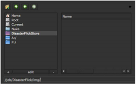
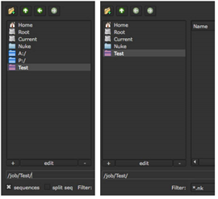

最喜欢的目录可以通过艺术家从任何一个点击访问 Nuke 文件浏览器。通常，您可以为项目中的公共目录创建这些收藏夹。
要定义常用目录集:
| 1。 | 创建一个名为 Menu.py 在插件路径目录中。 |
有关插件路径目录的更多信息，请参见 加载 Gizmos 、 NDK 插件以及 Python 和 Tcl 脚本 .
| 2. | 添加以下格式的条目: |
Nuke.addFavoriteDir (“displayname”，“pathname”)
• 替换 DisplayName 使用您想要的字符串作为目录链接的显示名称，例如 "禁用(disabled)之家" 或 'Desktop' .
• 替换 路径名 使用收藏夹应该指向的目录的路径名。
| 3. | 在上面的条目中，您也可以在后面添加以下可选参数 ' 路径名 ' : |
• 类型 。这是一个整数和一个位运算符，或者是 Nuke.IMAGE , Nuke.SCRIPT 或 Nuke.FONT .
• Nuke.IMAGE 将收藏夹目录限制为仅显示在图像文件浏览器中, Nuke 打开文件读/写操作。
• Nuke.SCRIPT 将收藏夹目录限制为显示在脚本文件浏览器中，当您选择 文件 > 打开 Comp 或者类似的菜单选择来打开或导入脚本文件。
• Nuke.FONT 限制收藏目录显示在字体浏览器中。
• 图标 = “名称”。 替换 名称 的名称和文件扩展名 。巴布亚新几内亚 (或 。Xpm ) 您希望用作收藏目录图标的图像。此图像必须存储在您的 Nuke 插件路径目录。它应该是 24x24 像素的大小。
• Tooltip = 'tooltip' 。替换 我的工具提示 您希望显示为弹出帮助的字符串。
以下条目将创建一个名为 DisasterFlickStore 它出现在从读取节点调用的所有文件浏览器上，并指向/job/DisasterFlick/img 目录。
Nuke.addFavoriteDir (“disasterflickstore”，“/作业/DisasterFlick/img”，nuke.IMAGE)
|
 |
| 示例 1 的结果。 |
以下条目将创建一个名为 测试 。它出现在从读取节点或通过选择 文件 > 打开 Comp 并指向/job/Test 目录。该条目还定义了 测试图像和脚本 作为最喜欢的目录的工具提示。
Nuke.addFavoriteDir (“测试”，“/作业/测试”，nuke.IMAGE | nuke.SCRIPT，工具提示 = “测试图像和脚本”)
|
 |
| 示例 2 的结果。 |
|
|